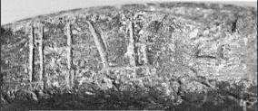
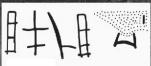

-
SYZa9
Names
Aliases for the inscription.
SYZa9, SY Za 9
Support
Type of Object.
Stone vessel
Location
Site where object was found.
Syme
Findspot
Location at Site.
Unavailable


Scribe
Writer of Inscription.
Unavailable
Context
Approximate Date of Inscription.
Late Minoan IA
1600-1500 BCE
Dimensions
Height x Length x Thickness.
Catalogue
Museum Reference Number.
Readings
1 1 0 JA none
1 1 0 PA none
1 1 0 RA none
1 1 0 JA none
1 1 0 SE none
Linear A Transcription
A Linear A transcription with words parsed separately.
Line breaks match the inscription.
𐘱𐘂𐘴𐘱𐘈
ASCII Transcription
An ASCII transcription with words parsed separately.
Line breaks match the inscription.
JAPARAJASE
Linear A Tabulation
A Linear A transcription with words parsed separately.
Line breaks are logical, e.g. to represent a list.
𐘱𐘂𐘴𐘱𐘈
ASCII Tabulation
An ASCII transcription with words parsed separately.
Line breaks are logical, e.g. to represent a list.
JAPARAJASE
SY Za 9
(HM 5585) (ArchEph 2008, 212-13), circular
serpentine Libation Table (MM IIIB-LM IA context; H. ca. 5.8;
D.
ca. 9.1 cm). The inscription is inscised just below the rim.
JA-PA-
RA
-JA-
SE
RA
is open towards the right like
20% of RA in Linear A, and thus the ancester to Linear B ra (on SY Zb 7).
SE has a triangular base; cf.
SY Za 6 & HT Zb
158a.
Commentary © John Younger
References